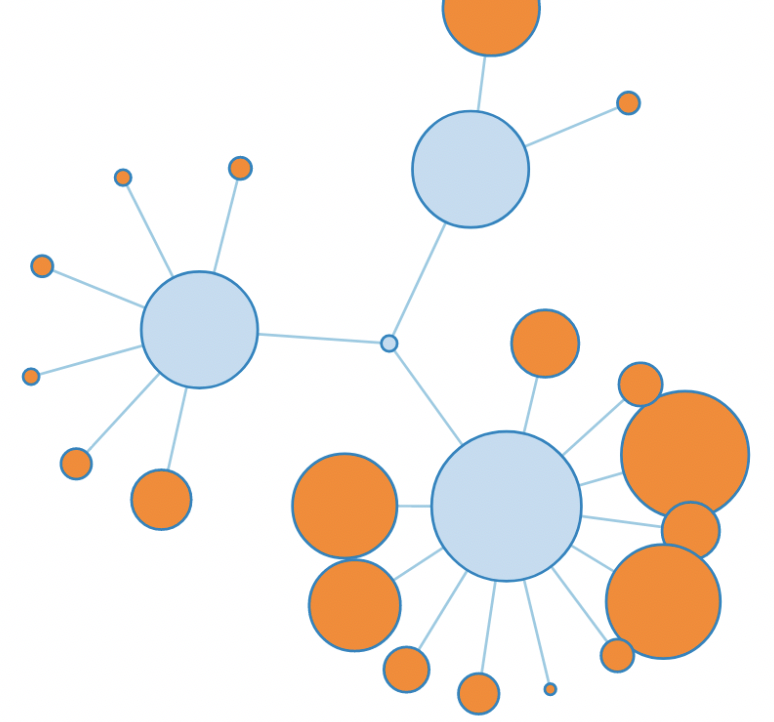
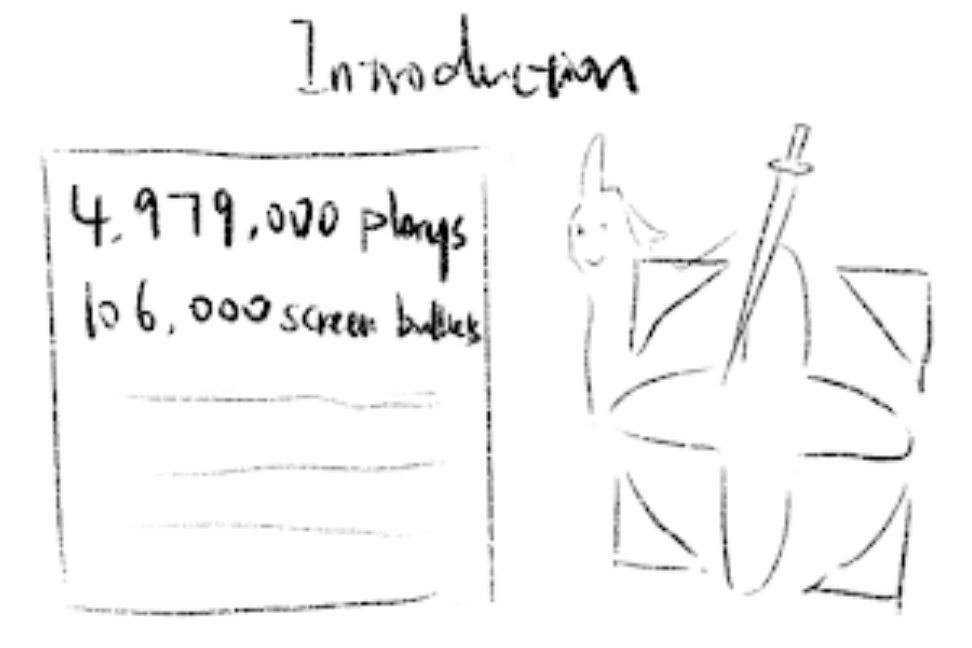
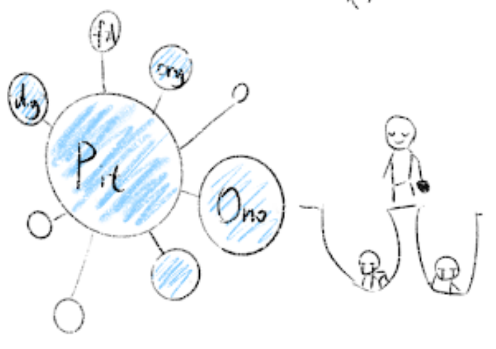

After scratching data from the website, I used R to do proximity analysis to find out the relationships among words. The following image is what I got in R.

Rough n-gram chart I created through R
From the result, I thought the bubble chart is a great choice to present the relationships among words. The center bubble should be the biggest bubble (often represent the main character like Youko, Kirin), other smaller bubbles are connected by it. All bubbles and the lines should be interactive, users can interact with them to get more info.

One bubble chart I tried
In this case, I will focus on the tree structure to visualize my data of the novels and the comments in Bilibili.
- First of all, I will introduce the work The Twelve Kingdoms. Because it’s an unpopular work in the eastern anime market. I will shortly introduce the world view and special settings. 
- Secondly, I will cut tons of bubbles into different groups to help users to understand. I don’t want to show everything at the beginning and make audiences feel lost. So, secondary groups will help a lot. At the same time, I will add detailed descriptions for these groups to help audiences further understanding.
For example, the author didn’t finish the story about Taiki and the king of Tai. So a lot of audiences complained that they fell into the pit, which is dug by Ono. And now they can’t leave. It’s pretty fun.

- At the bottom part, I want readers can leave their comments about the data visualization of The Twelve Kingdoms. They can go through each other’s comments.